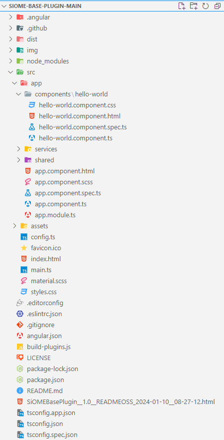

Setting up your Project
To help you get started developing SiOME plugins, the siome-base-plugin is provided as a starting point. The following paragraphs describe how to set up the project and how it is structured.
Structure
The screenshot below shows the files and folders under the project root. The ones relevant to plugin development are explained below.

There are several files in the src folder that may need to be modified during plugin development:
package.jsonangular.json
Every Node.js project is also a package and contains the file package.json. This file stores information about a package, for example:
- general information (name, version, author, ...)
- scripts
- configuration parameters for scripts
- dependencies on other packages
- for productive code (
"dependencies") - for development only (
"devDependencies")
To change the name of your plugin, edit the name in the package.json file as well as the outputPath of the angular.json file:
{
"name": "<your-plugin-name>",
"version": "0.0.1",
//...
"scripts": {
"ng": "ng",
"lint": "ng lint",
//...
},
"private": true,
"dependencies": {
"@angular/animations": "^17.0.4",
"@angular/common": "^17.0.4",
//...
},
"devDependencies": {
"@angular-devkit/build-angular": "^17.0.2",
"@angular-eslint/builder": "16.1.2",
//...
}
}
{
//...
"projects": {
"plugin": {
//...
"architect": {
"build": {
"builder": "@angular-devkit/build-angular:browser",
"options": {
"outputPath": "dist/<your-plugin-name>",
//...
The Angular workspace configuration file angular.json lets you define (amongst others) the allowed sizes of various parts of your project. The more extensive your project becomes, the larger the individual parts become. If you get a message during building, that a part of your project exceeds a threshold, you can adapt it in the property "budgets".
//...
"budgets":
{
"type": "initial",
"maximumWarning": "2mb",
"maximumError": "5mb"
},
{
"type": "anyComponentStyle",
"maximumWarning": "6kb",
"maximumError": "10kb"
}
//...
For more information see: https://angular.dev/tools/cli/build#configuring-size-budgets
The folder src/app/components/ contains the actual source code files for the plugin. It is recommended to create separate components to structure the code of your plugin.
The file src/app/app.module.ts is a NgModule from the siome-plugin-base-project. It is the starting point of your plugin and contains the declarations of your created components as well as imports of additional libraries/packets.
Adding additional packages
External packages or libraries can be added to your project in two ways:
1. Using the package manager bundled with your Node.js installation:
The command npm install downloads and installs the newest version of the specified package.
npm install <package>
Info
To avoid version conflicts, make sure to install a package version compatible with your Node.js/Angular installation version by specifying a version:
npm install <package>@<version>
Info
When installing an angular component/library with npm, dont forget to import the module in the app.module.ts file.
import { <YourComponentFromLibrary> } from '<path to component>';
//...
@NgModule({
//...
imports: [BrowserModule, FormsModule, <YourComponentFromLibrary>],
//...
})
2. Using the CLI of your Angular installation:
The command ng add downloads and installs the specified package in the right version as well as configures your plugin project by invoking an installation script:
ng add <package>
Adding new components
To automatically generate your own component, use the ng generate command:
ng g c components/<your-component-name> --module=app
This will add an empty component under the src/app/components folder and update your app.module.ts file by importing your generated component and adding it to the declarations array:
import { <YourComponentNameComponent> } from './components/<your-component-name>/<your-component-name>.component';
@NgModule({
declarations: [
//...
<YourComponentNameComponent>,
],
//...
})
//..
To be able to access the SiOME plugin API in your new component, add the following lines to your component TypeScript file:
import { Component } from '@angular/core';
//Import SiOME API:
import { SiomeApiProviderService } from '../../services/siome-api-provider.service';
import { ISiomeApi } from '../../shared/public-api/interfaces/siome-api.interface';
@Component({
selector: 'app-your-component-name',
standalone: true,
imports: [],
templateUrl: './your-component-name.component.html',
styleUrl: './your-component-name.component.css'
})
export class YourComponentNameComponent {
//Add constructor:
constructor(private siomeApiProvider: SiomeApiProviderService) {}
//Add getter:
private get siomeApi(): ISiomeApi {
return this.siomeApiProvider.siomeApi!;
}
/*
Add your own code:
*/
}